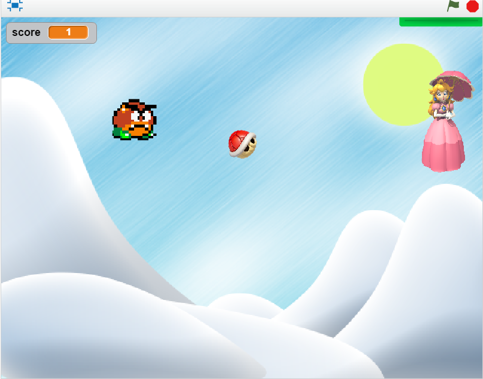
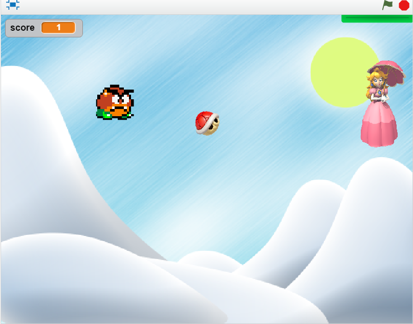

This is my Portfolio Page!

 

The purpose of our game was for our player to protect princess peach from the goomba chasing her using a shell without letting her be hit by the shell. We first made scripts for the shell, inverted it for the different costume and cycle between the two to make the efffect of it spinning. Next, we added in the sprites for the goomba, we made him have a running animation by scrolling between two costumes and then made it chase the princess by pointing in her direction and moving a certain amount of steps. We had difficulty setting up a timer so we just a timer and went with a point system and lives
The story of Minh Vinh Nguyen is of an OCC law student who's ordinary night turns into important night as he can choose to hang out with two different groups of friends. This leads him meeting two different girls that leaves him with tough decisions. In the end, he has many options to pursue his love or his dreams.
We first had to do a flow chart and plan out our story and we had to understand elif statements and if else statements. We had problem with spell checking andwe solved this by having other classmates read the story before it was published. I felt this story was pretty entertaining to do but I dislike how the programs that we used had no spell-check built in. Looking back, I really liked Matthieu's story as it provided a detailed story with a goal. He also included a timer so that the lines came in one at a time. If I had a chance to do it again, I would create more complicated choices and a longer story.